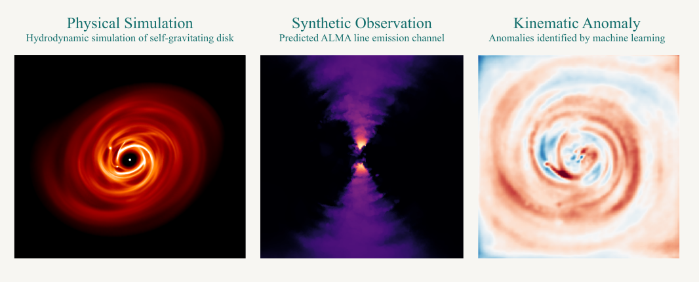

Disk dynamics & planet formation
Using three-dimensional simulations to investigate gravitational instability, magnetohydrodynamics, dust–gas interactions, and the structures carved by forming planets.
Simulations · Disk kinematics
Computational astrophysics · Planet formation
I study the physics of planet-forming disks and the history of our Solar System, combining numerical simulations, astronomical observations, and machine learning to connect theory with what we can measure.
Jason P. Terry, PhD · Postdoctoral Researcher
Department of Earth Sciences, University of Oxford

01 / Research
My work asks how the structures and instabilities of young disks influence what planets form, and how we can recover that history from telescope observations and the Solar System's surviving material.
Using three-dimensional simulations to investigate gravitational instability, magnetohydrodynamics, dust–gas interactions, and the structures carved by forming planets.
Linking disk evolution to evidence preserved in meteorites, including the transport of solids, magnetic environments, and the role of volatile ices in planetary building blocks.
Developing methods to detect planet signatures, identify anomalous motion, reconstruct interferometric observations, and extract physical parameters from complex data.
Research in practice
One simulated disk, viewed through physical modelling, synthetic observations, and machine-learning analysis.

Scroll horizontally to view all three panels.
02 / Selected work
A few examples spanning observations, computational models, machine learning, and early Solar System constraints. This is a selection rather than a complete bibliography.
VIREO: using interferometric response information to improve reconstruction of astronomical observations.
Journal article →Meteorite records as constraints on the movement of material and the timing of planetesimal formation.
Journal article →Investigating how disk dust content influences the structure traced by observations.
Journal article →Combining learned kinematic signatures with follow-up simulations to investigate a candidate planet in HD 142666.
Journal article →Machine learning applied to disk kinematics to identify candidate embedded planets.
Journal article →Measuring the signatures of gravitational instability to help infer disk mass.
Journal article →03 / Academic life
I enjoy helping students take ownership of research problems, especially at the intersection of physics, computation, and data analysis.
Teaching
My teaching experience includes devloping and delivering undergraduate astrophysics courses, leading mathematics tutorials at Oxford, and creating a graduate seminar on machine learning in the physical sciences.
I aim to make technical ideas approachable while giving students the confidence to work independently.
Research supervision
I have mentored undergraduate and graduate researchers on astrophysics and machine-learning projects, including work through the ML4SCI program and collaborations that connect physical modelling with data-driven methods.
I'm particularly interested in projects where students can develop both scientific intuition and practical computational skills.
04 / Contact
I'm happy to hear from people interested in disk physics, planet formation, astronomical data analysis, or possible collaborations. You can also request a current CV by email.